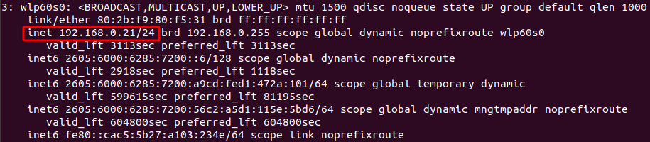

In this example, the first 24 bits are constant (First three octets)
This means that the subnet mask is 255.255.255.0
The number of hosts in a subnet: 2^(number of bits that change)
Network ID is the first address
Broadcast is the last address


Examples:
192.168.0.0/22
Subnet Mask - 255.255.252.0
Hosts - 1022
Network - 192.168.0.0
Broadcast - 192.168.3.255
192.168.1.0/26
Subnet Mask - 255.255.255.192
Hosts - 62
Network - 192.168.1.0
Broadcast - 192.168.1.63
192.168.1.0/27
Subnet Mask - 255.255.255.224
Hosts - 30
Network - 192.168.1.0
Broadcast - 192.168.1.31